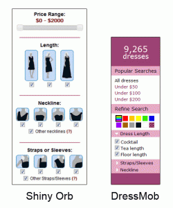
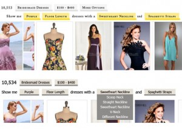
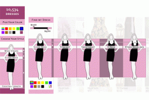

- Published by Audrey Cu -- Get updates of new posts here
Guest Post By Josiah Choy
An entrepreneur has the busiest job in the world. Between planning the menu, cooking the food and washing the dishes, their responsibilities include absolutely everything. You can probably relate – I sure can. So it shouldn’t be surprising that one of the most common mistakes an entrepreneur makes is misallocating time and energy.
For most small business (especially starts-up through mid-sized companies), the focus needs to be on customer growth and increasing top line revenue. Without strong revenue generation and acceleration, a small business can go from profitable to unprofitable in an extremely short period of time.… Read the rest
- Published by Tim Chin -- Get updates of new posts here
By Audrey

When I was first introduced to the concept of SEO, I thought about it in relation to websites and blogs. Marketers know that it’s crucial to use keywords, tags, and titles to boost their pages on search engines like Google. What I didn’t realize was that the same rules apply to app stores with app store SEO, or “app store optimization.”
As of June, Apple’s app store had over 900,000 apps. And last year, research firm Canalys estimated that up to two-thirds of the apps in leading app stores get fewer than 1,000 downloads in their first year.
Cardinal Blue saw this trend firsthand, publishing a few apps to iTunes that didn’t get amazing traction.… Read the rest
- Published by Elizabeth Yin -- Get updates of new posts here
Guest post by Arin
You’re a little bit nervous. You’re spending all this time putting together a great marketing campaign, but since you’re a startup, your product is not completely finished or optimized yet.
Let me share 3 tips for using marketing to drive interactions with your development team:
1) Set priorities and communicate very clearly
I know you’ve got a lot of ideas – that’s what you get paid the big bucks for. But when talking with your team, you need to be very clear about what is important to you right now. And, be clear about which specific parts of a feature are most important in the first version, and which parts can wait until later.… Read the rest
- Published by Elizabeth Yin -- Get updates of new posts here
by: Ian M
Photo Credit: The Lean Startup by Eric Ries
Take that elaborate business plan and throw it out the window. Creating a quick prototype and bringing it straight to the market is the best route for success in 2012. Rapid prototyping lets you get immediate information about what people really want, without wasting time planning and designing the product. If you haven’t a clue about creating prototypes or are already on the path, here’s the articles you should have read. Everything from the tools you will need, the process, the problems and a dose of inspiration. Get ready to fail better.… Read the rest
- Published by Elizabeth Yin -- Get updates of new posts here
By Elizabeth
Last week, I had a great time giving a webinar with the Get Sharp program, offered by Sharp Skirts, a network for professional women who are building companies. One of the easiest ways to do market testing on a business idea without even having a product is to do landing page tests. So, I gave my talk on Landing Page Testing: getting online customers without coding.
Though I’m thrilled that more web startups are using landing page tests to validate their business ideas, the tactical details of how to build a landing page, market it, and then analyze how it went are often mysterious to new entrepreneurs.… Read the rest
- Published by Elizabeth Yin -- Get updates of new posts here
By Elizabeth
Keyword searches are a great way to learn about how your potential customers are thinking about solving their problems. Many web marketers do keyword searches to scale their businesses via search engine optimization (SEO) and search engine marketing (SEM). However, we’re going to talk about keyword searches for a different purpose — for market research.
Before starting a web business, we want to know how to think about the landscape of a size given market — there are a number of techniques to do this research, and keyword research is just a small part of this research process. However, it’s one of the more overlooked methods. We’ll want to do keyword searches to learn about problems people are facing, current solutions, alternatives, and competitor presence. We’ll look at this from two angles — searching for problems and searching for solutions.… Read the rest
- Published by Elizabeth Yin -- Get updates of new posts here



By Jennifer
When Elizabeth and I launched Shiny Orb, a comparison shopping site for wedding apparel, we had thousands of dresses. So, it was a no-brainer we needed search to help people hone in on the perfect dress. We created an attribute search that allowed people to search by length, neckline, and strap styles as well as price and later by color.
This past summer, we started DressMob, a social shopping site for dresses. The selection on DressMob would be even bigger, so we wanted to create a better search. We decided to draw from usability on Shiny Orb as an initial starting point for building this search on DressMob, so we had a number of considerations:
How big should the search box be?
On Shiny Orb, we have a drop down menu allowing people to show 20, 40, 65, 100 results.… Read the rest
- Published by Elizabeth Yin -- Get updates of new posts here
Jennifer and I are throwing a Women 2.0 Partner Event called: Learn How to Build & Test Your Startup Idea Without Coding. This event is for people who have been throwing around some internet ideas for a while but don’t know how to program. It will be on Oct 20, 2010 6:30-9:00 at Sandbox Suites in San Francisco.
Here’s the link to RSVP:
http://ilaunch.eventbrite.com/
And, the details copied from the Eventbrite:
“iLaunch: How to build & test your idea without coding” is a workshop for women entrepreneurs on Wednesday, October 20, 2010 from 6:30pm to 9pm at Sandbox Suites coworking space in San Francisco, CA.… Read the rest